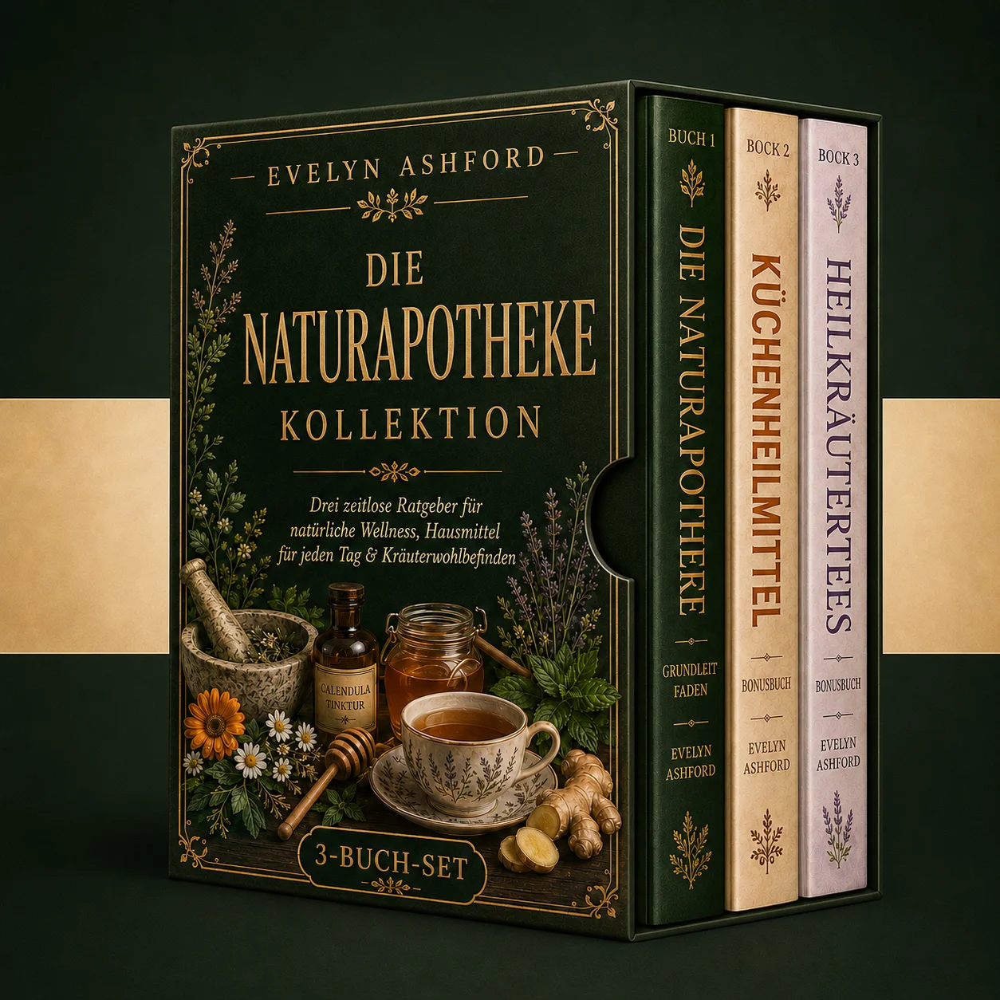

Sie müssen kein Kräuterexperte sein. Sie brauchen keine teuren Zutaten. Und Sie brauchen keinen Schrank voller komplizierter Nahrungsergänzungsmittel. Diese anfängerfreundliche Sammlung zeigt Ihnen, wie Sie altmodische Kräuterheilmittel, beruhigende Tees, natürliche Sirupe, hausgemachte Salben, Küchenmittel und einfache Rezepte gegen Halsbeschwerden, Schlafstörungen, Verdauungsprobleme, Muskelschmerzen, Hautpflege, Immunität und vieles mehr zubereiten.

Nur für kurze Zeit: Das erhalten Sie:
Wir verstehen das – drei komplette Leitfäden für natürliche Heilmittel zum Preis von einem sieht man nicht alle Tage.
Hier ist die einfache Wahrheit: Einmal im Jahr, um diese Jahreszeit, veranstalten wir ein besonderes Leser-Event, um uns bei unserem Publikum zu bedanken und den Zugang zu unseren beliebtesten Wellness-Sammlungen für zu Hause zu erleichtern.
Da wir alles direkt verwalten – vom Verlag bis zur digitalen Lieferung –, können wir Einzelhandelsaufschläge, Druckkosten und unnötige Zwischenhändler einsparen, um das gesamte Paket, das normalerweise 59,70 € kostet, für nur 19,90 € anzubieten.
Nach Ende des Events gelten wieder die regulären Preise.
Seit Generationen wussten Familien, wie man einfache Kräuterrezepte zu Hause zubereitet.
Sie wussten, welche Tees man bei einer unruhigen Nacht zubereitet... welche Küchenzutaten man bei Halskratzen verwendet... welche Kräuter traditionell für die Verdauung genutzt wurden... welche selbstgemachten Salben man bei Muskelschmerzen bereithielt... und welche natürlichen Präparate in jeden Haushalt gehörten.
❌ Doch heute ist der Großteil dieses Wissens verloren gegangen.
Stattdessen rennen die Menschen wegen jeder kleinen Unpässlichkeit in die Apotheke, geben Geld für Produkte aus, die sie kaum verstehen, und fühlen sich völlig unvorbereitet, wenn sie zu Hause eine natürlichere Option wünschen.
Und genau da beginnt die Frustration.
Natürliche Hausmittel wirken nur dann verwirrend, wenn man versucht, willkürliche Online-Tipps, widersprüchliche Kräuterratschläge, komplizierte Rezepte und vage Videos für Leute, die sich bereits auskennen, zusammenzustückeln.
Dann passieren Fehler – man kauft die falschen Kräuter, mischt Zutaten ohne zu wissen warum, verwendet zu komplizierte Rezepte, verschwendet Geld für unnötige Produkte und gibt auf, bevor man überhaupt eine echte natürliche Apotheke zu Hause aufgebaut hat.
Was wäre, wenn das Einzige, was zwischen Ihnen und Ihrer eigenen Hausapotheke steht, die richtige Schritt-für-Schritt-Anleitung ist?
Denn die Wahrheit ist: Sie brauchen keine jahrelange Erfahrung. Sie brauchen keine seltenen Kräuter. Sie brauchen keine teure Ausrüstung. Und Sie müssen nicht damit aufgewachsen sein, dies von Ihren Großeltern gelernt zu haben.
Aber mit den richtigen Grundlagen wird der Aufbau Ihrer eigenen natürlichen Apotheke einfach, bestärkend und unglaublich lohnend.
Genau aus diesem Grund wurde dieses 3-Bücher-Paket entwickelt: Um Sie Schritt für Schritt von der Auswahl der richtigen Kräuter und Küchenzutaten bis hin zur Zubereitung von beruhigenden Tees, altmodischen Sirupen, selbstgemachten Salben, Kräuterölen, einfachen Kompressen und natürlichen Rezepten für die häufigsten Alltagsbeschwerden zu begleiten.
Dieses Paket lehrt Sie nicht nur etwas über Kräuter – es hilft Ihnen, sich jedes Mal vorbereitet zu fühlen, wenn Ihr Zuhause eine natürliche Option benötigt.
Wenn Sie Ihre eigene natürliche Apotheke zu Hause aufbauen wollten, sich aber überfordert oder unsicher fühlten, oder es leid waren zu raten, welche Kräuter Sie kaufen, welchen Rezepten Sie vertrauen oder wie Sie sie richtig zubereiten sollten, beseitigt dieses Paket jedes Hindernis auf Ihrem Weg.
Es gibt Ihnen Vertrauen, Klarheit, einen einfachen Schritt-für-Schritt-Weg, von traditionellen Hausmitteln inspirierte Rezepte, Werkzeuge zur Vermeidung von Anfängerfehlern, die Fähigkeit, nützliche Kräuter und Zutaten auszuwählen, ohne Geld zu verschwenden, die Fertigkeit, Tees, Sirupe, Salben, Öle und Küchenmittel zu Hause zuzubereiten, und die Genugtuung, endlich Ihre eigene natürliche Apotheke bereit zu haben, wann immer Ihre Familie einfache, traditionelle häusliche Pflege benötigt.
Im Moment, während es 70% RABATT gibt, erhalten Sie drei komplette Leitfäden für natürliche Heilmittel zum Preis von einem – ein Angebot, das nicht lange halten wird.
👉 Der Aufbau Ihrer eigenen natürlichen Apotheke muss nicht verwirrend sein. Es kann einfach, praktisch und unglaublich lohnend sein... wenn Sie mit der richtigen Anleitung beginnen.
Sichern Sie sich noch heute Ihr Paket mit 70% Rabatt und lernen Sie endlich, wie Sie altmodische Kräuterheilmittel, beruhigende Tees, Küchenrezepte, Sirupe, Salben und natürliche Präparate mit Vertrauen zubereiten.
Sofortigen Zugriff erhaltenOrder now and save 70% before this limited-time deal disappears.
Sofortiger direkter digitaler Download.
Haftungsausschluss: Nur zu Bildungszwecken. Ersetzt keinen medizinischen Rat. Bei Fragen, Schwangerschaft oder Medikamenteneinnahme konsultieren Sie einen Arzt.